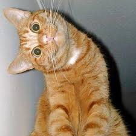

Teraz dodamy obrazek z opływaniem tekstu po lewej stronie.
Umiejscowimi go znowu w pierwszej linijce akapitu.
Dodanie opływania po lewej stronie, piesek przesuwa cały
paragrafdo swojego marginesu.
Przy okazji przećwiczyłem inny sposób dodawania stylu
w css'ie :)
Teraz dodamy obrazek z opływaniem po prawej stronie.
Dodam go w innym miejscu w tekście, aby sprawdzić co się stanie.
Żeby to sprawdzić potrzebuję dodać więcej tekstu...
Żeby to sprawdzić potrzebuję dodać więcej tekstu...
Żeby to sprawdzić potrzebuję dodać więcej tekstu...
Żeby to sprawdzić potrzebuję dodać więcej tekstu...
Żeby to sprawdzić potrzebuję dodać więcej tekstu...
Trochę brzydziej wygląda.. Dodam jakiś margin
Trochę lepiej jednak ta linijka, która jest nad pieskiem
psuje efekt. Tak raczej nie będę robił. Chyba zeby wyjustować
tekst ale nie wiem jeszcze jak to zrobić.
Ok już wiem jak i wygląda o wiele lepiej :)
 Przy dodawaniu dwóch obrazków pojawiają się w kolejności w jakiej są umieszczane w tekście kodu. Przy opływaniu z lewej strony układają się od lewej do prawej.
Przy dodawaniu dwóch obrazków pojawiają się w kolejności w jakiej są umieszczane w tekście kodu. Przy opływaniu po prawej stronie, układają się od prawej do lewej.